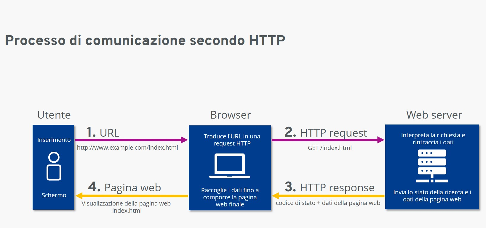
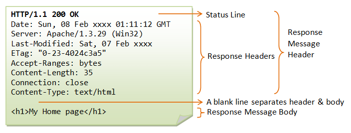

HTTP – HyperText Transfer Protocol
Il protocollo HTTP è un protocollo client-server che consente di trasferire risorse via rete.
- Il client (browser, app) invia una richiesta al server per ottenere una risorsa (pagina, immagine, file, ecc.).
- Il server elabora la richiesta e risponde con il contenuto richiesto oppure con un errore (es. 404).
- La comunicazione avviene tramite connessione TCP e usa il formato richieste/risposte.
HTTP è uno standard stateless, cioè ogni richiesta è indipendente: il server non mantiene memoria dello stato. Per aiutare il server a memorizzare alcuni dati del client si untilizzano i cookie. I cookie sono piccoli file di testo memorizzati nel browser del client e inviati al server con ogni richiesta. Possono contenere informazioni relative alla sessione dell'utente in un sito web. I messaggi HTTP sono di due tipi RICHIESTA o RISPOSTA e sono composti da un'intestazione (Header) e da un corpo (Body).
- L'Header contiene informazioni come metodo, URL, tipo contenuto, ecc.
- Il body è composto dalle informazioni effettive del messaggio
Le richieste HTTP più comuni sono:
GET– Ottiene una risorsa.POST– Invia dati al server.PUT– Richiesta di memorizzazione di risorsa.DELETE– Elimina una risorsa.HEAD– Ottiene solo l'intestazione della risorsa.OPTIONS– Richiede informazioni sulle opzioni disponibili per una pagina web.CONNECT– Richiede connessione via Proxy.TRACE– Richiede di ricevere l'eco del messaggio inviato.
Il server risponde con un messaggio HTTP che contiene uno status code (es. 200 OK, 404 Not Found) e i dati richiesti.
Il browser si collega al server tramite un URL (Uniform Resource Locator), che specifica:
- Protocollo (http o https)
- Dominio (es. www.example.com)
- Percorso della risorsa (es. /index.html)
Infine, il browser mostra la risposta all'utente interpretando il contenuto .